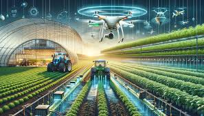

-

To Carry On Business Of Agricultural Commodities,Poultry,Horticulture And Fishery Farming,
Deep Sea Fishing Farming,Rice Production And Processing, Trawling,Fruit Farmers, Millers And Manufacturers
Of Cereal Products And To Carry On Business Of Manufacturing, Farm Equipments,Production And Sale Of
Rubber And Plastics Products, Livestock Feeds,Fertilizers,Pesticides And Farm Implements; And To Engage
In The Business Us Preparers Of All Kind Of Drinking Water,Production Of Pure And Table Water,Supply Of
Water Generally;And Engage In General Farming And General Export And Import Of Agricultural Products
Of All Ramification; And To Engage In Manufacturing Of General Goods; And To Carry On Business As Meat
Merchants, Butchers And Retailers Of All Kinds Of Meat.
By QASWA AGROTECH on 17/09/2024
-
To Carry On Business Of Crop Processing,Processing Of Agricultural Products,
Farm Produce And Farming;And To Carry Business On Agro Allied And Food Processing,
Export And Sales In Local Market Of Foods Products,Large Farm To Grow The Allied Products And Any
Other Business Relating To Crop Farming And To Manufacture, Produce, Supply And Deal
In Chemicals/insecticides Of All Kinds, Whether Describable As Acids, Alkalis, Solvents, Or Otherwise,
And Whether Synthetic Or Naturally Occurring, Eatery And Catering Services, Animal Feeds From Crops Residue,
Productions Of Organic Fertilizers,Composite Fertilizers From Crops Residue And Animal Husbandry;
And To Sale Supply And Deal In Agricultural Machineries And Equipments.
By QASWA AGROTECH on 12/10/2024
-
To Carry On The Business Of Fish Farming,And Hydroponics Or Otherwise; To Import, Export,Store,Process,
Semi-process In Any Or All Of The Agricultural Chemicals And Agro-allied Related Products. To Establish,
Agro-chemical Industries And Supply, Market, Distribute, Store, Package, And Preserve,Process,Agro Products
In All Ramifications/branches; And To Carry On Business Of Agricultural Commodities,Poultry,Horticulture
And Fish Hatchery,Fishery Farming,Deep Sea Fishing Farming,Trawling,Fruit Farmers,Millers And Manufacturers
Of Cereal Products And To Carry On Business Of Manufacturing,Production And Sale Of Livestock Feeds,
Fertilizers, Pesticides And Farm Implements.
By QASWA AGROTECH on 07/11/2024
.jpeg)